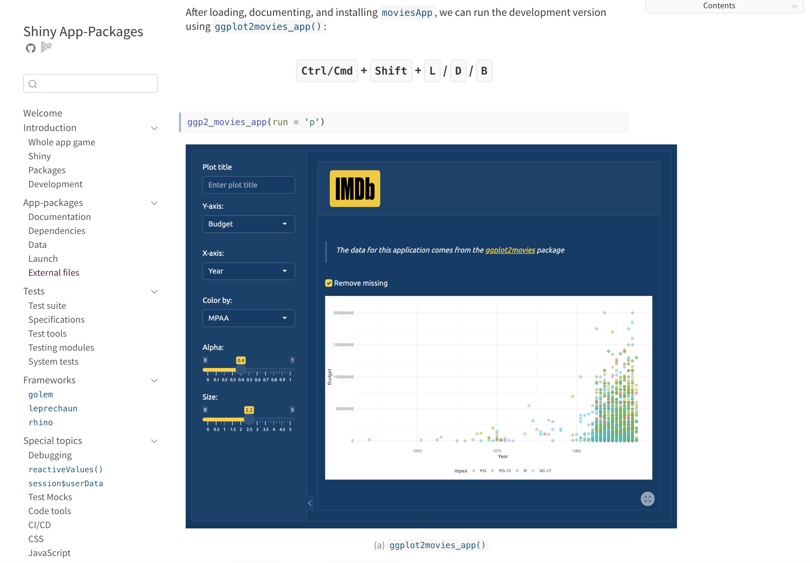
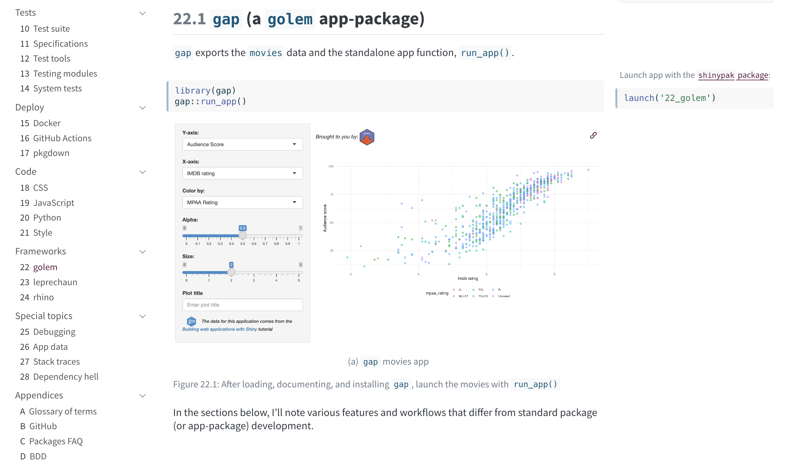

Shiny App-Packages
Explore the screenshots »
Report a Bug · Request a Feature . Ask a Question

About
Shiny App-Packages covers how to create a Shiny application as an R package.
Screenshots
| Testing Shiny apps | Shiny frameworks |
|---|---|
|  |  |
Built With
Quarto, Shiny and Posit workbench.
Getting Started
Make sure you have R, Posit Workbench, and Git installed.
Prerequisites
The contents of the text assumes you’re comfortable with R, Posit Workbench, Shiny, and the tidyverse. Maybe you haven’t built a ton of applications, but you understand reactivity, and you’re comfortable with the core Shiny concepts (i.e., the UI, server, *_Input(), *_Output(), and render_* functions, etc.).
Usage
The code examples can be found in the moviesApp repo. The sections from each chapter can be found in the branches.
git checkout <branch>Issues
See the open issues for a list of proposed features (and known issues).
- Top Feature Requests (Add your votes using the 👍 reaction)
- Top Bugs (Add your votes using the 👍 reaction)
- Newest Bugs
Reach out to the maintainer at one of the following places:
- GitHub issues
- Contact options listed on this GitHub profile
Project assistance
If you want to say thank you or/and support active development of Shiny App-Packages:
- Add a GitHub Star to the project.
- Tweet about the Shiny App-Packages.
Together, we can make Shiny App-Packages better!
Contributing
First off, thanks for taking the time to contribute! Contributions are what make the open-source community such an amazing place to learn, inspire, and create. Any contributions you make will benefit everybody else and are greatly appreciated.
License
This project is licensed under the MIT license.
See LICENSE for more information.